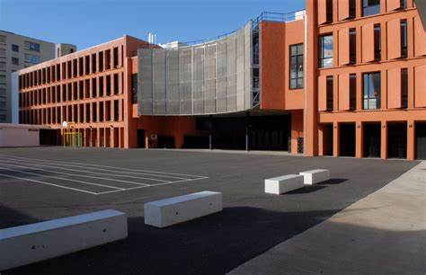
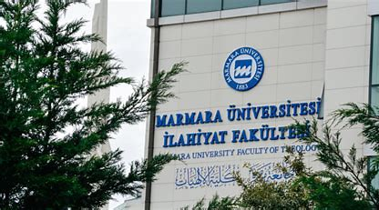

Depuis mon enfance, mon entourage m'a toujours considéré comme un enfant particulier. À seulement trois ans, alors que je ne savais même pas encore nouer mes lacets, j'avais déjà appris à lire, simplement en observant les adultes autour de moi. Quand il fut temps pour moi d’aller à l’école, mes parents ont été surpris d’apprendre que je ne commencerais pas en première année comme les autres enfants. On m’a directement placé en deuxième primaire.
Durant mon enfance, j’adorais les livres, mais ce que j’aimais encore plus, c'était écouter les récitations du Coran. Mon admiration pour ce Livre a grandi avec moi. Après avoir terminé le primaire, mes parents ont décidé de m’inscrire dans un internat pour apprendre le Coran. Je suis parti en 2014, à seulement 12 ans. Alhamdoulillah, en trois ans, j’ai mémorisé tout le Coran, devançant même mes frères qui avaient commencé avant moi. En 2017, je suis revenu à la maison, avec le cœur rempli de gratitude envers Allah. Trois ans plus tard, en 2020, j’ai obtenu mon baccalauréat. Mais à ce moment-là, la réalité m’a frappé. Mes parents n’avaient pas les moyens financiers de payer mes études universitaires. C’était difficile, mais j’ai accepté la situation. J’ai commencé à travailler dans un petit emploi pour 150 $ par mois. C’était loin d’être idéal, mais cela m’a appris la patience et la persévérance. Puis, par la grâce d’Allah, après une année de travail acharné, une opportunité inattendue s’est présentée. J’ai décroché une bourse d’études pour la Turquie. Aujourd’hui, je suis étudiant dans ce magnifique pays, et chaque jour, je remercie Allah pour le chemin qu’il m’a tracé. Mon parcours n’a pas été facile, mais il m’a enseigné que chaque épreuve est une étape vers une bénédiction plus grande.
| periode primaire | ||||
|  | 2009-2014 | tenafep | ||
| periode internat | ||||
|
2014-2020 | accomplissement du hifz | obtention du bac | |
| periode universitaire | ||||
|  | 2020-2024 | universite de marmara(faculte de theologie) | grafikart(informatique) | bilakoro |
{kind=link}